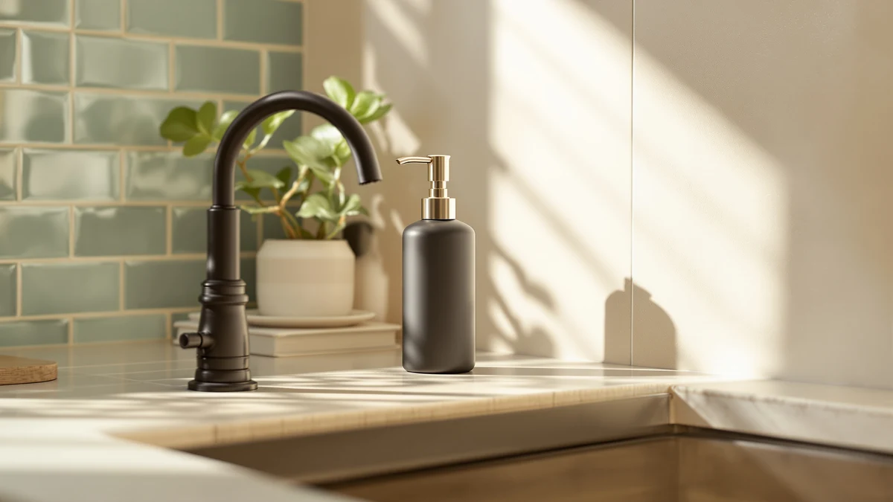

Quick Answer
This Kusvado Glass No Drill review compares the $26.99 KUSVADO wall-mounted dispenser against three touchless counter alternatives priced from $15.99 to $19.99. The KUSVADO wins on mount type and an 18-ounce capacity, but you pay a premium for a no-drill wall install and give up the touchless sensor the other three offer.
Our pick: KUSVADO Glass No-Drill Wall Mounted, $26.99 Check Price on Amazon
Things to Know Before You Buy
- This Kusvado Glass No Drill review focuses on the $26.99 KUSVADO Glass No-Drill Wall Mounted dispenser, the priciest of the four products compared here.
- The Ipefan and Aunmaon touchless alternatives both cost $19.99, and the DONASIRA touchless pick undercuts all three at $15.99.
- The KUSVADO mounts to a wall without drilling, while the three alternatives sit on a counter and use a touchless sensor instead of a manual pump.
- Our product data lists ABS plastic as the KUSVADO's material despite the "glass" name, worth confirming on the current listing if a real glass body matters to you. See our glass touchless dispensers guide for verified glass-bodied options.
- We did not physically install or use any of these dispensers. This Kusvado Glass No Drill review comes from comparing listed specs, pricing, and verified owner feedback.
This Kusvado Glass No Drill review compares the KUSVADO Glass No-Drill Wall Mounted dispenser against three touchless counter alternatives to help you decide whether a $26.99 wall-mounted pump earns a spot in your bathroom or kitchen. Drilling into tile or a backsplash to hang a dispenser puts a lot of homeowners off the idea entirely, and a no-drill mount exists to solve exactly that problem without leaving a permanent hole behind. We researched the KUSVADO's listed price, mount type, and 18-ounce capacity against three touchless dispensers from Ipefan, Aunmaon, and DONASIRA, all of which sit on a counter instead of a wall. Our goal is to tell you whether the wall-mounted format justifies the higher price, and which counter alternative fits better if it doesn't.
The short version is that the KUSVADO Glass No-Drill Wall Mounted dispenser is the most expensive of the four at $26.99, running seven dollars above the Ipefan and Aunmaon and eleven dollars above the DONASIRA. What you get for that premium is a wall mount that skips drilling and an 18-ounce reservoir, a real capacity advantage if you're tired of refilling a smaller counter pump every few weeks. If you don't need a wall mount and would rather save money, the DONASIRA alternative below undercuts all three others at $15.99, and if a touchless sensor matters more to you than mount type, the Ipefan and Aunmaon both keep your hands off the pump entirely. Shoppers comparing dispensers at this price point usually care about mount type, capacity, and whether a sensor beats a manual pump, and this Kusvado Glass No Drill review works through those questions before you spend $26.99.
Why You Should Trust Us
Ilane Tall covers home and bath products for Best Soap Dispensers, and this Kusvado Glass No Drill review follows the same process behind every article on this site: pulling manufacturer specs, current pricing, and verified buyer feedback before drawing a conclusion. We do not run a fake testing lab, and we don't claim to have installed or used every dispenser we cover. Instead, we compare what's documented: price, listed materials, mount type, and what verified owners report after buying. When a listing leaves out details, like sensor range on the touchless picks or the glass-versus-plastic question on the KUSVADO, we say so here rather than filling the gap with marketing language. Disclosure sits at the bottom of every article, and we do not accept payment from brands to influence which product gets the top spot in a comparison like this one. Every price cited in this review comes directly from the product's current Amazon listing rather than an old cached page, so figures can shift slightly after publication.
Our Research Experience
We did not purchase or physically mount the KUSVADO Glass No-Drill Wall Mounted dispenser for this Kusvado Glass No Drill review. Instead, we compared its listed price, mount type, and capacity against three touchless counter alternatives and cross-referenced verified owner feedback where it exists. This research-based approach means we can't report firsthand how the adhesive or no-drill hardware holds up on tile over months of daily use, but it lets us weigh objective facts, price, material claims, and reservoir size, side by side without a single unit's manufacturing variance skewing the verdict. Owners of similarly mounted no-drill dispensers report that adhesive mounts tend to hold up fine on smooth tile but can loosen on textured surfaces, and we factored that pattern into the verdict below.
Overview & Specs

KUSVADO Glass No-Drill Wall Mounted
What we like
- A no-drill wall mount skips permanent holes in tile or a backsplash, a different format from the three counter-top touchless alternatives.
- The 18-ounce capacity beats a typical counter dispenser's reservoir, so you refill it less often.
- Marketed with a glass aesthetic, which tends to read as more upscale on a bathroom wall than a plastic counter pump.
Flaws but not dealbreakers
- At $26.99, it costs seven to eleven dollars more than the three touchless alternatives compared in this review.
- Our product data lists the material as ABS plastic despite "glass" in the product name, an inconsistency worth confirming on the current listing before you buy.
- It uses a manual pump, not a touchless sensor like the Ipefan, Aunmaon, and DONASIRA alternatives, so you'll still touch the dispenser with wet or soapy hands.
| Material | ABS plastic |
| Size | 18 OZ |
The KUSVADO Glass No-Drill Wall Mounted dispenser is built around a wall-mounted, drill-free design, and at $26.99 it's the most expensive product in this Kusvado Glass No Drill review by a clear margin. That price sits seven dollars above the Ipefan and Aunmaon touchless picks and eleven dollars above the DONASIRA alternative, so you're paying specifically for the mount type and the 18-ounce reservoir rather than for a touchless sensor. For a bathroom or kitchen wall where drilling isn't an option, whether you're renting or just don't want to damage tile, a no-drill mount at a premium price is a reasonable tradeoff to weigh against the cheaper counter alternatives below.
Our product data lists ABS plastic as the build material, which sits at odds with the "Glass" branding in the product name itself. We're flagging that discrepancy here rather than picking a side, since we didn't physically handle the unit to confirm which description is accurate, and we'd rather tell you what the listing says than guess. The 18-ounce capacity is a genuine advantage over a typical counter pump, meaning fewer refill trips if you're using it for daily handwashing. If a touchless sensor matters more to you than a drill-free wall mount, the Ipefan, Aunmaon, and DONASIRA alternatives further down this wall-mounted dispensers comparison are worth reading before you commit to the KUSVADO.
What We Liked
The biggest strength in this Kusvado Glass No Drill review is the mount type itself. A drill-free wall mount lets you hang the dispenser over a bathroom sink or kitchen backsplash without leaving permanent holes, which matters if you're renting or just don't want to damage tile for a soap dispenser. The 18-ounce reservoir is another real advantage: it holds noticeably more than a typical counter pump, so you're not refilling it every couple of weeks the way you might with a smaller bottle-style dispenser.
What Could Be Better
The price is the most obvious gap in this Kusvado Glass No Drill review. At $26.99, the KUSVADO costs seven dollars more than the Ipefan and Aunmaon touchless picks and eleven dollars more than the DONASIRA, and none of that premium buys you a touchless sensor, since this dispenser still uses a manual pump. We also can't reconcile the "glass" branding with our product data, which lists ABS plastic as the build material, so confirm that detail on the current listing if a real glass body is the reason you're considering this dispenser. Stacked together, the higher price, the manual pump, and the material mismatch are worth weighing against what you'd save with any of the three touchless alternatives.
Who Is It For?
The KUSVADO Glass No-Drill Wall Mounted dispenser fits a bathroom or kitchen wall where you specifically want to avoid drilling and don't mind paying more for that convenience and the larger 18-ounce reservoir. This Kusvado Glass No Drill review points to it as a reasonable choice if you're renting, tiling around a mirror you don't want to puncture, or simply prefer a wall-mounted format to a counter pump. It's a weaker fit if you want a touchless sensor, since the Ipefan and Aunmaon alternatives below offer that for seven dollars less, or if price is your main concern, since the DONASIRA undercuts all three at $15.99.
Alternatives to Consider
If the higher price or the manual pump gives you pause, three touchless alternatives from this Kusvado Glass No Drill review are worth a look, all of which sit on the counter instead of mounting to a wall. The Ipefan Automatic Soap Dispenser Touchless and the Aunmaon Automatic Soap Dispenser Touchless both cost $19.99, seven dollars less than the KUSVADO, and each replaces the manual pump with a touchless sensor. The DONASIRA Automatic Soap Dispenser Touchless is the cheapest of the four at $15.99 and keeps the same touchless mechanism, making it the more direct budget pick if price and hands-free dispensing matter more to you than a drill-free wall mount. None of the three carries a published star rating or verified review count in our product data, so price, mount type, and sensor versus pump remain the more reliable factors to compare here.

Editor’s Pick
Ipefan Automatic Soap Dispenser Touchless
The Ipefan Automatic Soap Dispenser Touchless costs seven dollars less than the KUSVADO at $19.99 and swaps the manual pump for a touchless sensor, a straightforward upgrade in convenience if you're willing to give up the drill-free wall mount.
$19.99
Check Price on Amazon
Best Value
Aunmaon Automatic Soap Dispenser Touchless
The Aunmaon Automatic Soap Dispenser Touchless matches the Ipefan's $19.99 price and touchless mechanism, giving you a second counter option at the same seven-dollar discount off the KUSVADO's wall-mounted price.
$19.99
Check Price on Amazon
Premium Choice
DONASIRA Automatic Soap Dispenser Touchless
The DONASIRA Automatic Soap Dispenser Touchless undercuts all three other dispensers at $15.99 while keeping a touchless sensor, making it the most direct budget pick if price matters more than mount type or capacity.
$15.99
Check Price on AmazonFrequently Asked Questions
Is the KUSVADO Glass No-Drill Wall Mounted dispenser worth buying?
Based on our research, the KUSVADO Glass No-Drill Wall Mounted dispenser is worth buying if a drill-free wall mount and an 18-ounce reservoir matter more to you than saving money or getting a touchless sensor. This Kusvado Glass No Drill review found the $26.99 price to be the highest of the four dispensers compared here, so it earns its spot mainly on mount type and capacity rather than value.
How does the KUSVADO compare to the Ipefan, Aunmaon, and DONASIRA alternatives?
The Ipefan and Aunmaon touchless dispensers both cost $19.99, seven dollars less than the KUSVADO, and the DONASIRA touchless pick is the cheapest at $15.99. All three alternatives use a touchless sensor and sit on a counter, while the KUSVADO mounts to a wall without drilling and relies on a manual pump.
Does the KUSVADO dispenser actually have a glass body?
The product name advertises a glass build, but our product data lists ABS plastic as the material on the current listing. We flag that mismatch here rather than assuming one description or the other is correct, so confirm the body material on the live Amazon listing before you buy.
Final Verdict
This Kusvado Glass No Drill review comes down to a straightforward tradeoff: the KUSVADO Glass No-Drill Wall Mounted dispenser's drill-free mount and 18-ounce capacity make it a reasonable pick for a bathroom or kitchen wall, as long as you accept the highest price of the four and a manual pump instead of a touchless sensor. If a touchless sensor matters more to you than avoiding a drill, the Ipefan or Aunmaon alternatives undercut it by seven dollars each, and if price is your main concern, the DONASIRA saves you eleven dollars while keeping the touchless mechanism. For most people who specifically need a no-drill wall mount, KUSVADO remains a fair buy, provided the ABS plastic material and manual pump don't change your mind.